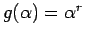

Tomemos
,  y N un número difuso cuya función de pertenencia está formada por trazos rectos entre y
con
. En ese caso tendremos
y N un número difuso cuya función de pertenencia está formada por trazos rectos entre y
con
. En ese caso tendremos
Para el cálculo de cada integral seguimos un procedimiento semejante al del caso 1, tomando tales que
Por lo tanto, para
Oscar Duarte
2005-05-01